üëã hi, i'm kathy
About
Hello! I'm Kathy and am currently a sophomore at Wellesley College (class of 2025), intending to major in Computer Science and Economics. I have particular interests in front-end development, but am open to exploring anything üëÄ. I also enjoy teaching others about coding and I'm curious about learning more about the tech realm in general!
My journey started when I wrote my first line of code in a Kode With Klossy web development camp in the summer of 2020. I loved being able to create projects that could impact people (that also had a beautiful design ✨). My CS classes in college further solidified my interests in being able to solve problems creatively and build real products for real people ⭐️.
Outside of coding, I enjoy yoga and figure skating in my free time. I also love to read, cook, and grocery shop.